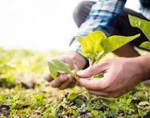
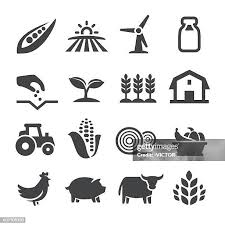
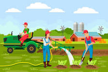

Introducción a la Agronomia
La agronomía es la ciencia que estudia la producción agrícola y busca mejorar la eficiencia y sostenibilidad de los sistemas agropecuarios. Su objetivo principal es optimizar el uso de los recursos naturales para obtener alimentos, fibras y otros productos vegetales, asegurando el equilibrio ambiental y el bienestar de la sociedad. Esta disciplina combina conocimientos de biología, química, física, ecología y economía para desarrollar técnicas que permitan aumentar la productividad de los cultivos y el ganado, conservar el suelo y el agua, y reducir el impacto ambiental de la agricultura. La agronomía abarca diversas áreas, como: 
Importancia de la Agronomia
La agronomía es fundamental para el desarrollo sostenible de la agricultura y la producción de alimentos, ya que busca equilibrar la productividad con la conservación de los recursos naturales. Su impacto se extiende a diversas áreas clave:
🌳 Seguridad Alimentaria 🌳
La agronomía permite aumentar la producción de alimentos y mejorar su calidad, garantizando el abastecimiento para una población en constante crecimiento. A través de técnicas como el mejoramiento genético, la optimización del uso del agua y el manejo de suelos, se busca maximizar los rendimientos de los cultivos.🌳 Sostenibilidad y Conservación del Medio Ambiente 🌳
El uso irresponsable de los recursos agrícolas puede llevar a la degradación del suelo, la contaminación del agua y la pérdida de biodiversidad. La agronomía promueve prácticas sostenibles como la rotación de cultivos, la agroecología y la agricultura de conservación para minimizar el impacto ambiental.🌳 Optimización del Uso del Suelo y el Agua 🌳
 El suelo y el agua son recursos limitados y esenciales para la agricultura. La agronomía investiga métodos para su manejo eficiente, como el riego tecnificado, el uso de fertilizantes adecuados y la prevención de la erosión, asegurando su disponibilidad a largo plazo.🌳 Innovación y Tecnología Agrícola 🌳
Gracias a los avances en la agronomía, la agricultura ha evolucionado con el uso de drones, sensores, maquinaria automatizada y cultivos transgénicos. Esto ha permitido aumentar la eficiencia de los sistemas de producción y reducir el desperdicio de recursos.🌳 Reducción del Impacto del Cambio Climático 🌳
El cambio climático afecta la producción agrícola con sequías, inundaciones y temperaturas extremas. La agronomía contribuye con estrategias de adaptación, como el desarrollo de cultivos resistentes a condiciones adversas y sistemas de manejo del agua más eficientes.🌳 Desarrollo Económico y Social🌳
La agricultura es una fuente clave de empleo y desarrollo económico, especialmente en comunidades rurales. La agronomía mejora la rentabilidad de los productores, fomenta el emprendimiento en el sector agropecuario y fortalece la cadena de suministro de alimentos.🌳Salud y Nutrición🌳
La calidad de los alimentos está directamente relacionada con su producción. La agronomía ayuda a reducir el uso de productos químicos dañinos y fomenta la producción de alimentos más saludables y nutritivos.🌱Conclusión🌱
La agronomía no solo se enfoca en aumentar la producción de alimentos, sino en hacerlo de manera sostenible y eficiente. Su importancia radica en garantizar el equilibrio entre la demanda alimentaria, la conservación del medio ambiente y el bienestar de las futuras generaciones. Los cambios que la agronomía introdujo en la producción agrícola a finales del siglo XIX y comienzos del XX fueron sorprendentes, y claves para la renovación agrícola que acompañó a la industrialización del llamado Primer Mundo. La maximización de las posibilidades productivas del campo permitió sostener una población mundial creciente. Por lo tanto, los conocimientos de la agronomía son indispensables para países agrícolas, como las naciones exportadoras de materia prima del llamado Tercer Mundo.Tecnologias y Mecanización Agricola
- 🌱Tractores: fundamentales para preparar la tierra, sembrar y transportar materiales. 
- 🌱Sembradoras: permiten una siembra más rápida y uniforme.
- 🌱Cosechadoras: agilizan la recolección de cultivos como trigo, maíz y arroz
- 🌱Sistemas de riego mecanizado: incluyen riego por aspersión, goteo y pivote central.
- 🌱 Drones agrícolas: utilizados para monitorear cultivos y aplicar fertilizantes o pesticidas.
- Aumenta la productividad y reduce el esfuerzo humano.
- Permite una producción más uniforme y de mejor calidad.
- Reduce el desperdicio de insumos y optimiza el tiempo de trabajo.
- Disminuye costos de producción a largoplazo.
La tecnología y mecanización agrícola han transformado la forma en que se produce en el campo, aumentando la eficiencia, reduciendo costos y mejorando la sostenibilidad. La introducción de maquinaria avanzada y nuevas tecnologías permite optimizar el uso de recursos como el suelo, el agua y los insumos agrícolas.
Mecanización Agrícol
\ La mecanización agrícola implica el uso de maquinaria y herramientas para facilitar las labores del campo, como la siembra, el riego, la cosecha y el procesamiento de productos.🌾Principales Maquinarias Agrícolas
Beneficios de la Mecanización
Relacion entre la Agronomia y otras ciencias
La agronomía se ayuda de los saberes compartidos con muchas otras disciplinas científicas, como son la biología, la química, la geoquímica, la microbiología o la botánica, para comprender los factores naturales (físicos u orgánicos) que determinan la labor agrícola. La agronomía se relaciona con la biología para comprender el funcionamiento de las plantas y su interacción con el ambiente. La agronomía es una disciplina que se nutre de conocimientos de otras ciencias, como la biología, la química, la microbiología, la botánica y la ecología.